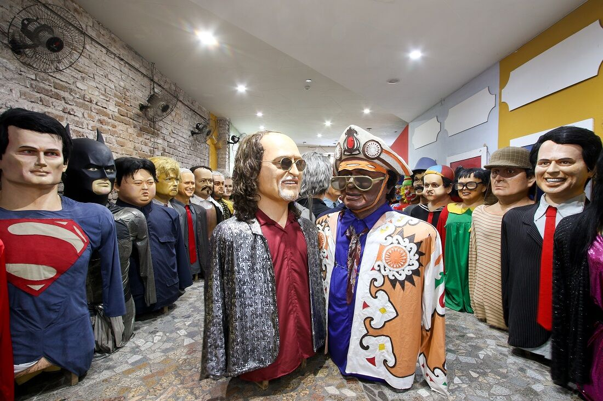

Paço do Frevo

O Paço do Frevo é um centro de referência de ações, projetos e atividades de documentação, transmissão, salvaguarda e valorização de uma das principais tradições culturais brasileiras, reconhecida como Patrimônio Imaterial da Humanidade pela Unesco: o frevo. Um lugar para estudar, criar, experimentar e vivenciar o rico universo de histórias, personalidades, memórias e linguagens artísticas.
Localizado no Bairro do Recife, o Paço tem curadoria assinada por Bia Lessa. Além de se valer de conteúdos e linguagens diversas para manter vivo o ritmo que embalou a formação da identidade cultural recifense, o equipamento promove oficinas e apresentações musicais regulares em quatro pavimentos de atividades, que oferecem aos visitantes a possibilidade de experimentar o Carnaval recifense durante todo o ano.
O imóvel onde está instalado o museu é um capítulo à parte na rica história do equipamento, tendo abrigado até 1973 a Western Telegraph Company, empresa pioneira na implantação do telégrafo no Brasil. Hoje, ele faz parte do complexo turístico das cidades de Recife e Olinda e é tombado pelo IPHAN desde 1998.
O museu Paço é uma iniciativa da Prefeitura do Recife, com realização da Fundação Roberto Marinho e gestão do Instituto de Desenvolvimento e Gestão - IDG. O projeto conta com o patrocínio do Banco Nacional de Desenvolvimento Econômico e Social (BNDES), da Companhia Energética de Pernambuco (Celpe), do Governo do Estado de Pernambuco, por meio de sua Secretaria de Turismo e da Empresa de Turismo de Pernambuco (Empetur), do Instituto Camargo Corrêa, do Instituto Votorantim, do Itaú, da Rede Globo e apoio do Instituto do Patrimônio Histórico e Artístico Nacional (IPHAN) e do Ministério da Cultura, por meio da Lei de Incentivo à Cultura..
Texto elaborado pela Prefeitura de Recife, disponível em: https://www2.recife.pe.gov.br/servico/paco-do-frevo. Acessado em 08 de dezembro de 2023.
Embaixada de Pernambuco - Bonecos Gigantes de Olinda
A Embaixada de Pernambuco dos Bonecos Gigantes de Olinda surgiu da grande necessidade do turismo de Recife e Olinda de possuir um espaço cultural estruturado a receber turistas e recifenses para contemplar a grande magia da nova geração dos Bonecos Gigantes não só no carnaval, mas sim o ano inteiro.
O espaço localizado na Rua do Bom Jesus 183, Recife Antigo (desde 31 de julho de 2009), abriga a exposição permanente de 63 bonecos gigantes, dentre os 300 existentes desta nova geração que materializa ícones como: Alceu Valença, Michael Jackson, Chacrinha, Ayrton Senna, Chico Science, Domiguinhos, Luíz Gonzaga, Rita Lee, Lampião, Tim Maia, Silvio Santos, Mauricio de Nassau, Papa Francisco, Cartola, Joaquim Barbosa, Lulu Santos, Elvis Presley, Pelé, Neymar entre outros, o espaço é pura magia.
A visita é monitorada por um guia que expõe a origem da cultura dos Bonecos Gigantes além de explicar o processo de confecção e manipulação. O Ambiente possui bela cenografia além de contar com a loja de souvenires e escritório para a encomendas de miniaturas personalizadas e gigantes.
Texto disponível em: http://www.bonecosgigantesdeolinda.com.br/embaixada.php. Acessado em 08 de dezembro de 2023.